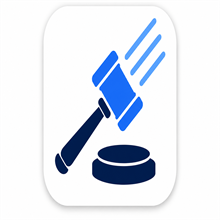

Review the same deck as the desktop, on the shared engine.
Sign in with your AnkiWeb account. Reviews sync both ways with the desktop — a normal sync merges automatically.
No account yet? Create a free AnkiWeb account
This device and AnkiWeb differ — choose once: